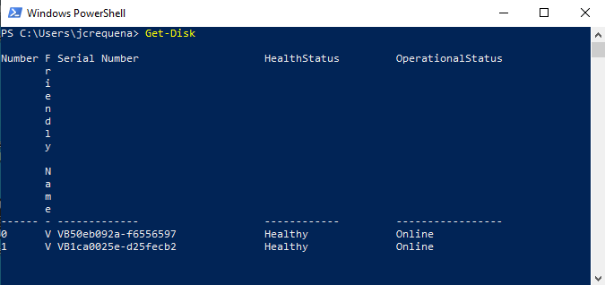
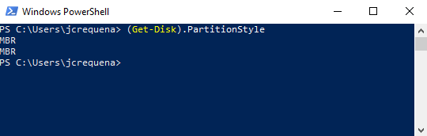
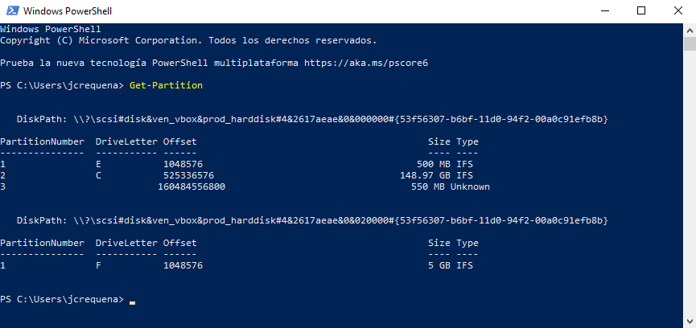
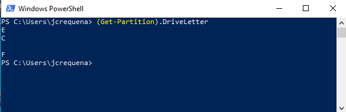
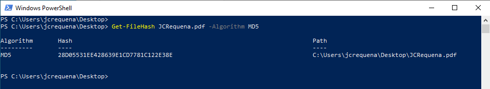

6.1 Sistemas de ficheros y gestión de particionado
1. Sistemas de ficheros
Los ficheros que podemos encontrar en un sistema operativo cualquiera contienen todo tipo de información, a saber: credenciales de acceso, datos bancarios, datos personales, etc. El carácter sensible de toda esta información, hace que nos decantemos por que el sistema de ficheros sea seguro.
Actualmente, se tienen muchos sistemas de ficheros relacionados directamente o no al sistema operativo, ejemplo:
- NTFS: Sistemas basados en Windows de 64 bits.
- Ext4: Sistema de ficheros nativo de Linux.
- APFS: Para sistemas macOS.
A continuación, se describen los sistemas de ficheros más relevantes/importantes:
- FAT32 (FILE ALLOCATION TABLE). Es un sistema de archivos que fue desarrollado por Microsoft sucediendo a FAT16. Este sistema de ficheros limita a 4GBytes el tamaño máximo de un fichero. Es utilizado principalmente para el intercambio de información (inferior a 4GBytes) entre distintos equipos, ya que es compatible con prácticamente todos los dispositivos. Este sistema se puede ver en pendrives y tarjetas de memoria.
- ExFAT (EXTENDED FILE ALLOCATION TABLE). Actualización de FAT32. Dispone de todas las ventajas de FAT32 y no tiene la limitación de 4 GB. Es compatible con Linux y Mac y puede ser utilizado en Windows desde XP Service Pack 3.
- NTFS (NEW TECHNOLOGY FILE SYSTEM). Alternativa a FAT32 desarrollada por Microsoft. No tiene límite de tamaño máximo de 4 GB y es muy recomendado su uso en discos duros y unidades externas. Además, distingue entre mayúsculas y minúsculas. En cuanto al acceso a archivos, es más rápido que una partición en FAT, ya que hace uso de un árbol binario de alto rendimiento y cifra los archivos, al contrario que FAT. Es un sistema transaccional, es decir, con journlaling.
- EXT4 (FOURTH EXTENDED FILESYSTEM). Sucesor de EXT3 con mejores características, como por ejemplo: mayor velocidad de lectura y escritura y un menor uso de CPU. Además, soporta volúmenes de hasta 1024 PiB o PebiByte (1 PebiByte equivale a 2 a la 50 Bytes). Mejora la velocidad de lectura y escritura, pero es más lento al borrar archivos. Es un sistema transaccional, es decir, con journlaling.
- BTRFS (B-TREE FS). Es una nueva tecnología para Linux desarrollada por Oracle que permite escalar el almacenamiento a configuraciones de gran capacidad. Se supone que en un futuro reemplazará a EXT4. Soporta volúmenes de hasta 16 EiB (ExbiByte) (1 EiB = 1024 PiB). Su uso es recomendable en discos muy grandes y SSD. Mejora la velocidad de lectura, escritura y borrado.
- APFS:
2. Gestión de Particiones en Powershell
Mostrar información del disco
Para mostrar la información del disco, podemos utilizar el cmdLet Get-Disk.
PS C:\Get-Disk

Para conocer el tipo de tabla de partiones podemos utilizar el cmdLet (Get-Disk).PartitionStyle.
Ps C:\(Get-Disk).PartitionStyle

Crear particiones y formato
Para crear una partición podemos utilizar el cmdLet New-Partition.
PS C:\New-Partition -DiskNumber 1 -UseMaximumSize -AssignDriveLetter
Para dar formato a un volumen, se tiene el cmdLet Format-Volume. Ejemplo, para dar formato a la unidad F:, hacemos:
PS C:\Format-Volume -DriveLetter F:
Discos virtuales
Para crear discos virtuales, se tiene el cmdLet New-VHD. Ejemplo, para crear un disco virtual de 1Gbyte en F:, hacemos:
PS C:\New-VHD -Path F:\disco.vhdx -SizeBytes 1GB
Para montar un disco virtual, se tiene el cmdLet Mount-VHD. Ejemplo, para montar el disco virtual creado anteriormente, hacemos:
PS C:\Mount-VHD -Path F:\disco.vhdx
Listar Particiones
Para listar las particiones del sistema, se tiene el cmdLet Get-Partition.
PS C:\Get-Partition

Para listar el nombre de las unidades de las particiones, usamos el siguiente cmdLet:
PS C:\(Get-Partition).DriveLetter

3. Confidencialidad de los ficheros
PS C:\Enable-BitLocker-MountPoint"C:"-RecoveryPasswordProtector-UsedSpaceOnly-Verbose
PS C:\Disable-BitLocker-MountPoint"C:"
4. Integridad de los ficheros
Para calcular el hash de un archivo en Windows, podemos realizar el mismo desde powershell mediante el cmd-let Get-FileHash, donde como parámetro, podremos indicarle el algoritmo utilizado, a saber: md5, sha-1, etc..
Ejemplo, para calcular el md5 del fichero JCRequena.pdf hacemos:
PS C:\Get-FileHash JCRequena.pdf -Algorithm MD5

El parámetro Algortitm puede tener los siguientes valores dependiendo del algoritmo que se desee utilizar:
- MD5
- SHA1
- SHA256
- SHA384
- SHA512
- RIPEMD160
Obra publicada con Licencia Creative Commons Reconocimiento No comercial Compartir igual 4.0